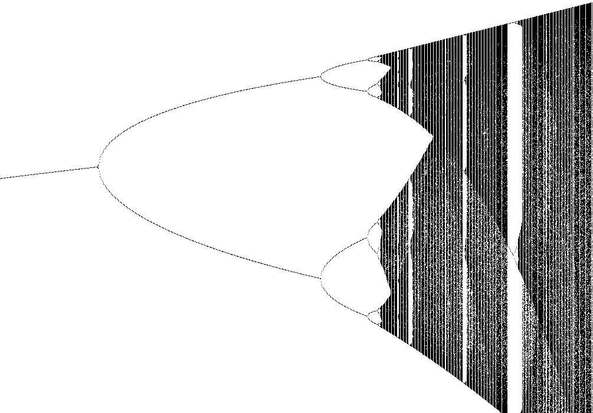

Fractal gallery
Logistic Map
A tiny feedback rule that opens into period doubling and chaos.
The logistic map looks almost too simple to be dangerous. Start with one number \(x_0\), feed it back into the same formula, and repeat. As the parameter \(a\) changes (horizontal axis), the long-term behavior moves from a single steady value to pairs, then four-cycles, then a flickering band of chaos.

What to try first
Read the horizontal direction as the parameter \(a\). The default view follows the classic window \(2.8 \le a \le 4.0\), where the calm fixed point begins to split.
Move from left to right. First the orbit settles to one value, then it alternates between two, then four, then a cascade of increasingly fine branches.
Turn on the Point picker tool and click along the diagram. wxChaos reports the Lyapunov exponent for the selected \(a\), giving a numeric hint about whether nearby orbits converge, separate, or sit on a boundary.
How to read the image
For each value of \(a\), wxChaos starts from the configured seed and iterates \(x_{n+1}=a x_n(1-x_n)\). After the initial settling period, the remaining values are plotted vertically. A single dot means the orbit has settled. Two dots mean it alternates. A dense vertical spray means the orbit keeps visiting many values.
The diagram is not a picture of many different formulas. It is one formula watched across many choices of \(a\). That is the trick: the complexity comes from repetition, not from adding more ingredients.
Things to change
Change Seed in the fractal options. Values between 0 and 1 are the natural playground for the classic logistic map.
Toggle Stabilize point. With stabilization on, wxChaos lets the orbit settle before measuring and drawing the values that matter most for the long-term behavior.
Increase the iteration count to make the branches denser. The image is accumulated from many visits of the same orbit, so more iterations reveal more of the structure.
Mathematical notes
The recurrence
The logistic map is \(x_{n+1}=a x_n(1-x_n)\). The number \(x_n\) is the current state, often interpreted as a normalized population, and \(a\) controls how strongly the next state responds to the current one. The factor \(1-x_n\) keeps growth from being unlimited.
Period doubling
For smaller values of \(a\), many seeds settle to one attracting fixed point. As \(a\) increases, that fixed point loses stability and the orbit alternates between two values. Later it splits again into four values, then eight, and so on. This repeating split is the period-doubling route to chaos.
Lyapunov exponent
The Lyapunov exponent estimates the average rate at which nearby starting values separate under iteration. For the logistic map, wxChaos averages \(\log |a(1-2x_n)|\) along the orbit. A negative exponent usually means nearby orbits are pulled together into stable or periodic behavior. A positive exponent means nearby orbits separate, which is a signature of chaos. Values close to zero often mark delicate transition boundaries.
You can inspect this directly with the Point picker tool: click a parameter value in the diagram and read the Lyapunov exponent in the point information output.